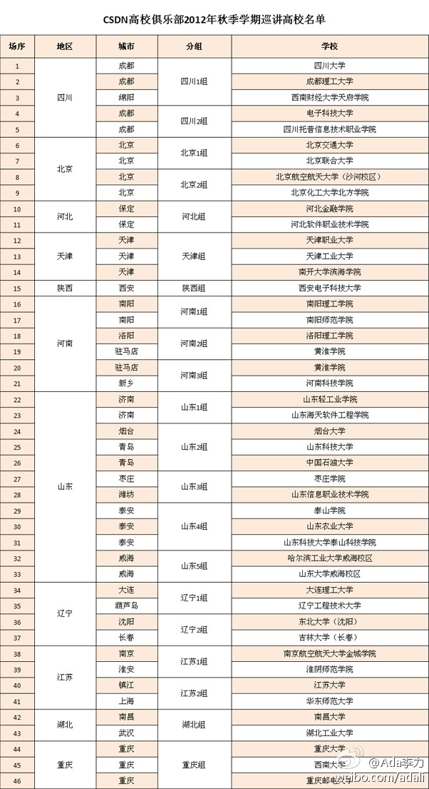

9月开学季CSDN高校俱乐部专家巡讲讲师招募中... CSDN高校俱乐部是一个非盈利性的、面向全国IT专业大学生的技术组织. 此次活动覆盖11个省及直辖市，有46个高校。 - liushizao的专栏 - 博客频道 - CSDN.NET 网页链接 
有一些IT领域的协会，在技术人员眼里，是只忽悠不干事的扯皮组织。不过，昨天听到一番见解，觉得蛮有道理。协会就是这样的定位，有些事情刚开始的时候，需要有人去忽悠，一些联盟也类似，能把忽悠的事情做好也不容易。落地的事情是另外一拨人干的。
昨天的聚会中，@浅水美鱼儿 说在看《非诚勿扰》和《中国好声音》节目时，一直在想的是如何借鉴这种多盈模式，来组织开源活动。当时就有人提出可以找@徐静蕾 代言开源活动，她的形象比较知性，而且出了本个人杂志，叫“开了”，和开源能扯上关系。[呵呵]
大外企都很理解协会的作用。//@胡德民PeterHu:我们需要协会去影响有决策权的领导者。技术人员也许更需要的是社区，但有关标准的制定、国家的政策与资源投入、意见的相互影响、成功管理经验的分享，行业协会的存在是完完全全不可或缺的，尤其是作为业界与政府之间的对话平台。@Ada李力:有一些IT领域的协会，在技术人员眼里，是只忽悠不干事的扯皮组织。不过，昨天听到一番见解，觉得蛮有道理。协会就是这样的定位，有些事情刚开始的时候，需要有人去忽悠，一些联盟也类似，能把忽悠的事情做好也不容易。落地的事情是另外一拨人干的。
//@浅水美鱼儿:在IT圈里敢于自称忽悠者，基本是做实事的群体或个人，而只靠忽悠谋生的，却惧怕别人说他忽悠。从心理学角度而言，人越想表现什么，其实是越缺什么。 在IT圈里，的确有大忽悠、小忽悠者存在。如果忽悠的目的是为了事业，那恐怕该把大忽悠升级为超级忽悠，反之，该把为谋私利的忽悠@Ada李力:有一些IT领域的协会，在技术人员眼里，是只忽悠不干事的扯皮组织。不过，昨天听到一番见解，觉得蛮有道理。协会就是这样的定位，有些事情刚开始的时候，需要有人去忽悠，一些联盟也类似，能把忽悠的事情做好也不容易。落地的事情是另外一拨人干的。
#社区工具#Google Alert 真是个好工具，等于是定制一份自己的报纸，比如我设置“云计算”关键字，Alert就可以每天把网上包含这个关键字的新闻，博客，在线文章等汇总后发到我的邮箱。多谢@CSDN包研 推荐
天下新闻一大转 - Google Alert发过来一篇和讯新闻：“开源将在云计算创新中发挥重要作用”，点过去发现是从ZOL转载的，再点过去是从网易科技转载的，再看发现是国外文章翻译过来的。我于是在ITEye上也转载了一把。
幽默，惊悚，自嘲，这爸爸真有创意。//@开颜的影像:有很多的创意可以借鉴@生活方式研究院:你是世上最好的爸爸吗？Dave Engledow，一位毕业于摄影系却成为了律师的美国人，自妻子怀孕并诞下可爱的女儿后，他拍的照片比前10年加起来的还要多。他用相机将自身与女儿相处的经验拍成一系列作品，并名为“World's Best Father”。
明俊指责我，记得到厨房拿雪糕吃，不记得关灯。我说: "你总是在批评人，不是批评我，就是批评女儿，你怎么不夸夸我呢?" 明俊说: "你太会用电了，走哪儿灯开到哪儿，简直太好了"。我:"对，以后就这么夸"。
 网页链接
网页链接